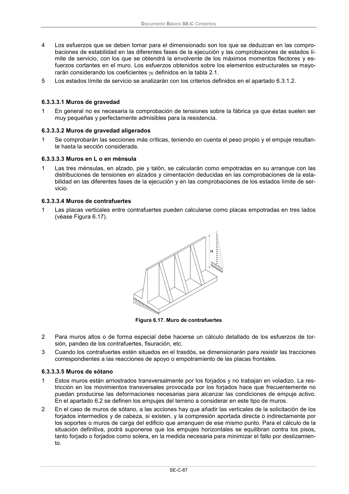

DB-SE-C · 6.3.3.3.3 Muros en L o en ménsula · versión 2019-12-20 · capa oficial
Formatos: JSON compacto · Markdown · PDF fuente
Ámbito del documento · texto del ámbito · documento y tablas
ID técnico a0195 · PDF pág. 92 · jerarquía no validada por persona · contrastado con el literal de la página 92 (candidato tipográfico); no validado por persona · padre: a0192
6.3.3.3.3 Muros en L o en ménsula 1 Las tres ménsulas, en alzado, pie y talón, se calcularán como empotradas en su arranque con las distribuciones de tensiones en alzados y cimentación deducidas en las comprobaciones de la esta- bilidad en las diferentes fases de la ejecución y en las comprobaciones de los estados límite de ser- vicio.

PDF fuente redistribuible: copia fiel enlazada en esta página (SHA256 verificado).